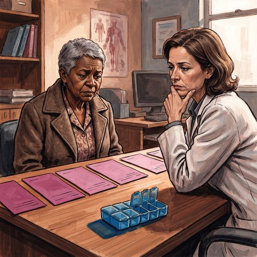

Ferramenta desta aula
Carga anticolinérgica. Roda no navegador, sem cadastro.
Consulta rápida à beira do leito
Condutas, doses e interações.
Referências da aula · 20
- Afya Whitebook. Polifarmácia no idoso. Acesso em outubro de 2026.
- Maese M, Ito N, Shiokawa H, et al. Frequency and profiles of drug combinations constituting the triple whammy in Japan. Pharmacy (Basel). 2026;14(5):117. PMID 42646348. doi:10.3390/pharmacy14050117.PubMedDOI
- Rzeczycki P, Pęciak O, Plust M, Droździk M. Molecular aspects of geriatric pharmacotherapy. Cells. 2025;14(17):1363. PMID 40940774. doi:10.3390/cells14171363.PubMedDOI
- Budnitz DS, Shehab N, Lovegrove MC, Geller AI, Lind JN, Pollock DA. US emergency department visits attributed to medication harms, 2017-2019. JAMA. 2021;326(13):1299-309. PMID 34609453. doi:10.1001/jama.2021.13844.PubMedDOI
- World Health Organization. Medication Safety in Polypharmacy. Geneva: WHO; 2019.
- do Amaral Júnior OL, et al. Association between polypharmacy and socioeconomic and demographic factors in adults aged 50 years and older by Brazilian macroregions (ELSI-Brasil). Pharmacoepidemiol Drug Saf. 2026;35(2):e70307. doi:10.1002/pds.70307.DOI
- Restelli A, et al. Prescribing cascades among hospitalized older adults: a retrospective cohort study from the REPOSI registry. Intern Emerg Med. 2026. doi:10.1007/s11739-026-04338-6.DOI
- Nunes BP, Batista SRR, Andrade FB, Souza Junior PRB, Lima-Costa MF, Facchini LA. Multimorbidade: Estudo Longitudinal da Saúde dos Idosos Brasileiros (ELSI-Brasil). Rev Saude Publica. 2018;52(Supl 2):10s. doi:10.11606/S1518-8787.2018052000637.DOI
- O'Mahony D, Cherubini A, Guiteras AR, et al. STOPP/START criteria for potentially inappropriate prescribing in older people: version 3. Eur Geriatr Med. 2023;14(4):625-32.
- Quek HW, et al. Implementation strategies for a deprescribing clinical practice guideline in older people (Clinical Practice Guideline for Deprescribing in Older People, Austrália, 2025). Int J Clin Pharm. 2026. doi:10.1007/s11096-026-02218-9.DOI
- Boyd CM, Darer J, Boult C, Fried LP, Boult L, Wu AW. Clinical practice guidelines and quality of care for older patients with multiple comorbid diseases. JAMA. 2005;294(6):716-24.
- Tinetti ME, Bogardus ST Jr, Agostini JV. Potential pitfalls of disease-specific guidelines for patients with multiple conditions. N Engl J Med. 2004;351(27):2870-4.
- Masnoon N, Shakib S, Kalisch-Ellett L, Caughey GE. What is polypharmacy? A systematic review of definitions. BMC Geriatr. 2017;17(1):230.
- Duerden M, Avery T, Payne R. Polypharmacy and medicines optimisation: making it safe and sound. London: The King's Fund; 2013.
- Lapi F, Azoulay L, Yin H, Nessim SJ, Suissa S. Concurrent use of diuretics, ACE inhibitors and angiotensin receptor blockers with NSAIDs and risk of acute kidney injury. BMJ. 2013;346:e8525.
- Cockcroft DW, Gault MH. Prediction of creatinine clearance from serum creatinine. Nephron. 1976;16(1):31-41.
- KDIGO CKD Work Group. KDIGO 2024 clinical practice guideline for CKD. Kidney Int. 2024;105(4S):S117-S314.
- American Geriatrics Society Beers Criteria® Update Expert Panel. AGS 2023 updated Beers Criteria® for potentially inappropriate medication use in older adults. J Am Geriatr Soc. 2023;71(7):2052-81.
- O’Mahony D, Cherubini A, Guiteras AR, et al. STOPP/START criteria for potentially inappropriate prescribing in older people: version 3. Eur Geriatr Med. 2023;14(4):625-32.
- World Health Organization. Medication Without Harm. Geneva: WHO; 2017.